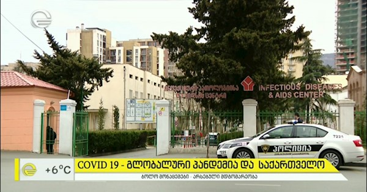

მათ მიერ გამოქვეყნებული კვლევა გვაწვდის ინფორმაციას რომელიც გვეუბნება იმას, რომ საქართველოში სიღარიბის პროცენტული მაჩვენებელი ყოველწლიურად იკლებს, თუმცა რეალობა პირიქით მეტყველებს. სრული ინფორმაციისთვის გადადით ლინკზე.
სრულად2020 წელს, მარტის შუარიცხვებში დაქოქილმა ტყუილმა, სამი თვე გამოკეტა საქართველოს მოქალაქეები სახლებში. საგანგებო მდგომარეობის პერიოდში გაკეთდა განცხადებები, დაძაბაული ტონალობებით, ვირუსის უძლიერს გავლენაზე, რომ მისი შეყრის მაღალი საშიშროება იყო და სიკვდილიანობის მაჩვენებლის მატების ფეიკ ნიუსიც ამუშავდა. სამწუხაროდ მოსახლეობის დიდმა ნაწილმა ეს დიდი ტყუილი დაიჯერა, თუმცა რეალური ფაქტებიდან გამომდინარე ყოველთვის მჟღავნდება სიმართლე. მეტი ინფორმაციისთვის გადადით ბმულზე.
სრულად